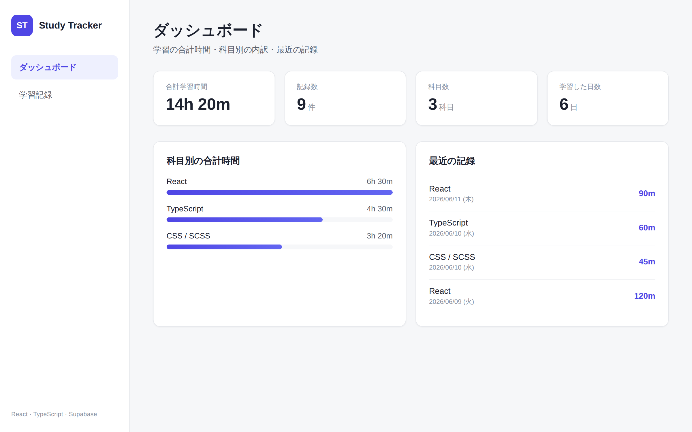

Case Study · Web Application · React / TypeScript / Supabase
学習管理アプリ Study Tracker
日々の学習を記録し、合計時間・科目別の内訳・日付別の履歴をダッシュボードで可視化する Web アプリです。 バックエンドに Supabase（PostgreSQL）を用い、学習記録の 追加・一覧・編集・削除（CRUD） を実装。 設計・DB設計から実装、Vercel へのデプロイ・公開まで一人で構築しました。

01 — Background
制作背景
これまで HTML / CSS / WordPress での Web 制作を中心に学んできましたが、 「データベースに繋いで、データを保存・更新する Web アプリ」 を自分で一から作り、 公開まで一人で完遂した経験 を形にしたいと考えていました。
学習記録アプリは、追加・取得・更新・削除（CRUD）と、合計時間・科目別といった集計が一通り必要で、 SaaS のダッシュボードのような UI も練習できます。「DB を使った Web アプリ開発」を理解し、 実際に動くものを公開するのにちょうどよい題材として選びました。
02 — Problem
課題設定
解決したいことを、ユーザー視点と自分の技術的なゴールに分けて整理しました。
- ユーザーが解決したいこと：勉強した内容を手軽に記録し、「どの科目をどれだけやったか」を一目で振り返れるようにする。
- DBに繋いで CRUD：Supabase（PostgreSQL）をバックエンドに、追加・一覧・編集・削除を一通り実装する。
- 型で壊れにくく：DB の行・フォーム入力・集計結果を TypeScript の型で表現する。
- 集計を可視化：合計時間・科目別・日付別の集計を自分で実装し、ダッシュボードに表示する。
- 公開する：Vercel + Supabase でデプロイし、URL でアクセスできる状態にする。
03 — Tech Stack
使用技術
それぞれ「なぜ使うのか」を意識して選びました。フロントは React / TypeScript、バックエンドは Supabase を中心に構成しています。
- React 18 宣言的UI
- TypeScript 型安全
- Vite 開発環境
- Supabase DB / API
- PostgreSQL データ保存
- React Router 画面遷移
- SCSS スタイル管理
- Vercel デプロイ
- Supabase を選んだ理由：サーバーを自前で立てずに本格的な PostgreSQL をすぐ使え、JS クライアントから CRUD を素直に書ける。RLS・Auth による「デモ → 本番（ユーザー別データ）」への発展経路も明確で、個人で「設計 → 実装 → 公開」まで完結しやすい。
- Vercel を選んだ理由：GitHub と連携し
pushだけでビルド・公開が自動化。環境変数で接続情報・公開APIキーを安全に管理でき、SPA の静的配信に最適で HTTPS URL をすぐ共有できる。
04 — Architecture
設計
画面・コンポーネント・データの3つの観点で設計しました。「状態を持つ／DBを呼ぶ層」と「受け取って表示する層」を分けています。
App // 学習記録ストア(useStudyRecords)を1つ持ち、各ページへ渡す └─ Layout // サイドバー + メイン（SaaS 風シェル） ├─ Dashboard // 集計して表示するだけ（表示専任） └─ Records // 編集対象を管理するページ ├─ RecordForm // 入力・バリデーション・送信 └─ RecordList // 日付別の一覧（編集・削除） useStudyRecords // 取得 + CRUD を集約し、state を更新して即時反映 api.ts // Supabase への CRUD（画面から SQL を隠す層）
- 画面：「ダッシュボード（集計表示）」と「学習記録（CRUD操作）」の2画面を React Router で切り替え。
- コンポーネント：データ操作を
api.tsとuseStudyRecordsに集約し、画面側は表示に専念。 - データ：学習記録は
study_recordsテーブル1つで表現（科目・分・日付・メモ）。集計はアプリ側の純粋関数で算出。
05 — Supabase
Supabase 連携
PostgreSQL のテーブルに対し、JS クライアント経由でデータを読み書きします。テーブル・RLS・環境変数の3点を設定しました。
- テーブル：
study_records（id / subject / minutes / studied_on / memo / created_at）を SQL Editor で作成。並び替え・集計用にインデックスを付与。 - RLS（Row Level Security）：有効化し、ポリシーで操作を制御。今回はログイン無しのデモのため anon に CRUD を許可。
- 環境変数：接続情報（URL / 公開APIキー）を
.envと Vercel の環境変数に設定。VITE_接頭辞でビルド時に注入。
lib/supabase.ts — クライアント生成（未設定を検知）
import { createClient } from '@supabase/supabase-js';
const url = import.meta.env.VITE_SUPABASE_URL;
const anonKey = import.meta.env.VITE_SUPABASE_ANON_KEY;
if (!url || !anonKey) {
throw new Error('Supabase の環境変数が未設定です。');
}
export const supabase = createClient(url, anonKey);user_id 列を追加して「自分の記録だけ操作できる」ポリシーへ置き換えます。
06 — CRUD
CRUD 機能
追加・取得・更新・削除を api.ts に閉じ込め、画面側は関数を呼ぶだけにしています。例として「記録を追加」する流れです。
入力
フォームに科目・時間・日付・メモを入力し送信。
検証
科目が空でないか、時間が1以上かをチェック。
insert
api.ts が Supabase に insert（型付き）。
即時反映
返り値をローカル state の先頭に追加。
異常系
失敗は try / catch でメッセージ表示。
api.ts — Create（型を当てて insert、エラーは throw）
export async function createRecord(input: StudyRecordInput): Promise<StudyRecord> {
const { data, error } = await supabase
.from('study_records')
.insert({
subject: input.subject,
minutes: input.minutes,
studied_on: input.studied_on,
memo: input.memo || null,
})
.select()
.single();
if (error) throw error;
return data;
}Read — 一覧取得
学習日の新しい順に取得し、日付別にグループ化して表示。select().order() を使用。
Update — 編集
一覧の「編集」でフォームに値を読み込み、update().eq('id', …) で更新。
Delete — 削除
確認ダイアログののち delete().eq('id', …)。ローカル state からも除外。
集計 — ダッシュボード
取得した記録から、合計時間・科目別・日付別を純粋関数で算出して可視化。
07 — Challenges
苦労したこと
- 環境変数でつまずいた：Vercel にデプロイ後「環境変数が未設定」エラーが出た。→ Vite は
VITE_変数をビルド時に埋め込むため、Vercel に変数を登録したあと再デプロイが必要だと理解して解決。 - RLS で読み書きできない：RLS を有効にしたら最初はデータが取得できなかった（ポリシーが無いと全拒否）。→ 仕組みを理解し、デモ用に anon を許可するポリシーを設定した。
- 状態の同期：更新・削除のたびに全件再取得すると重い。→ 返り値や id を使ってローカル state だけ更新する形にした。
- 「該当なし」を型で：取得結果が空のときの扱いを型で表現し、表示の出し分けを安全にした。
08 — Learned
学んだこと
- DB を使った Web アプリの全体像：フロントから API 経由で DB を読み書きし、画面に反映する一連の流れを通しで実装できた。
- 型安全な実装：DB の行・入力・集計をそれぞれ型で定義し、想定外のデータでも壊れにくくする感覚が身についた。
- 状態管理と非同期処理：取得・通信中・成功・エラーを state で扱い、
async / await+try / catch / finallyでまとめる設計を理解した。 - デプロイと運用：Vercel + Supabase での公開、環境変数の扱い、RLS によるアクセス制御の基礎を実地で学んだ。
09 — Future Work
今後の改善案
subjectsテーブルへの正規化（外部キー・JOIN を扱う）。- Supabase Auth でログインを導入し、ユーザーごとの記録に（RLS を本番仕様へ）。
- 週次・月次の推移グラフ、目標時間の設定など、振り返り機能の強化。
- Vitest + React Testing Library で、集計ロジックや通信処理のテストを追加。
10 — Relevance
この制作で活かせる点
- 本制作で扱った DB連携・CRUD・型安全・状態管理・デプロイ は、SaaS プロダクト開発の基礎としてそのまま実務に活かせると考えています。
- データを取得して集計・可視化する流れは、SaaS の管理画面（ダッシュボード） に通じます。
- 設計から公開まで一人で完遂した経験は、小さくても「作って届ける」力の裏付けになると考えています。
- 今後は Kotlin / Spring Boot・PostgreSQL を学び、「フロントから DB を扱う」側から「API・DB を設計する」側へ広げ、フルスタックエンジニアとして自走できるよう成長していきたいです。
For Reviewers — 公開中のアプリです
React / TypeScript / Supabase を用いて一人で構築・公開した Web アプリです。
設計・DB設計・実装・デプロイまでを一人で行いました。実際に動くアプリと、ソースコードをご覧いただけます。